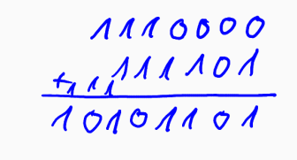

Mathe Klausur
Vorlesung 2: NAC, Rechnen in Registern, Mengen
NAC
NAC (Nautural Area Codes) sind Koordinaten in einem Stellenwertsystem mit der Basis 30.
Um ein NAC auszurechnen braucht man erst den Längen- und Breitengrad.
Breitengrad Formel: ((b+90)/180)*30^4
Längengrad Formel: ((l+180)/360)*30^4
Die Ergebnisse rechnet man in ein Stellenwertsystem zur Basis 30 um.
(siehe Stellenwertsysteme)
Rechnen in Registern
Arithmetische Operation
Die addition, subtration, multiplikation und division von zwei Zahlen des gleiche Stellenwertsystems kann mit der Schulmethode berechnet werden
Beispiel:

Ein Register speichert Binärzahlen
Die Anzahl der Zahlen, welche gespeichert werden können nennt man modulo
Ein Register vom modulo 16 kann alle Zahlen von 0-15 speichern
15 + 1 würde hier 0 ergeben
Mengen
Symboldeutung
- ∈: ist Element von... Beispiel : a∈M, = a ist ein Element von der Menge M
- ∉: ist kein Element von ... Beispiel : a∉M = a ist kein Element von der Menge M
- ∅: leere Menge : ist das Zeichen von einer Menge ohne Inhalt
- |M|: ist die Anzahl der verschiedenen Elemente einer Menge M
- ℕ: Die Menge der natürlichen Zahlen
- ℕ0: Die Menge der natürlichen Zahlen + der Zahl 0
- ℤ: Die Menge aller ganzen Zahlen
- ℚ: Die Menge aller rationalen Zahlen
- ℝ: Die Menge aller reellen Zahlen/Dezimalzahlen
Teilmengen
- ⊂: Echte Teilmenge... Beispiel : {1,2,3}⊂{1,2,3,4,5}
- ⊄: Keine Echte Teilmenge... Beispiel : {1,2,3}⊄{1,2,3}
- ⊆: Unechte Teilmenge... Beispiel : {1,2,3}⊆{1,2,3,4}...{1,2,3}⊆{1,2,3}
Operation mit Mengen
- ∩: Schnittmenge... Beispiel : {1,2,3}∩{0,1,3,5} = {1,3}
- ∪: Vereinigungsmenge... Beispiel : {1,2,3}∪{0,1,3,5} = {0,1,2,3,5}
- \: Differenzmenge... Beispiel : {1,2,3}\{0,1,3,5} = {2}
- x: kartesisches Produkt... Beispiel : {1,2,3}x{0,1,3,5} = {(1,0),(1,1),(1,3),(1,5),(2,0),(2,1),(2,3),(2,5),(3,0),(3,1),(3,3),(3,5)}